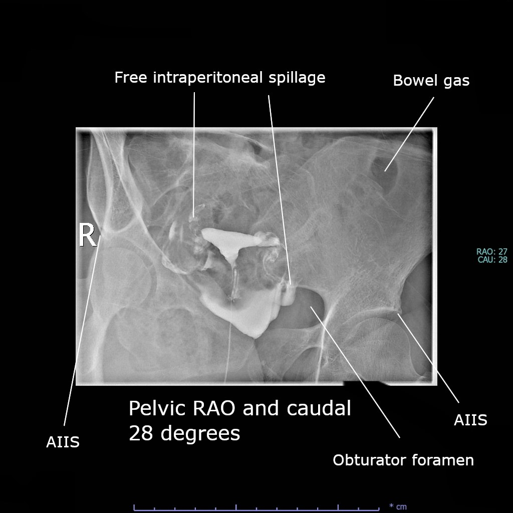
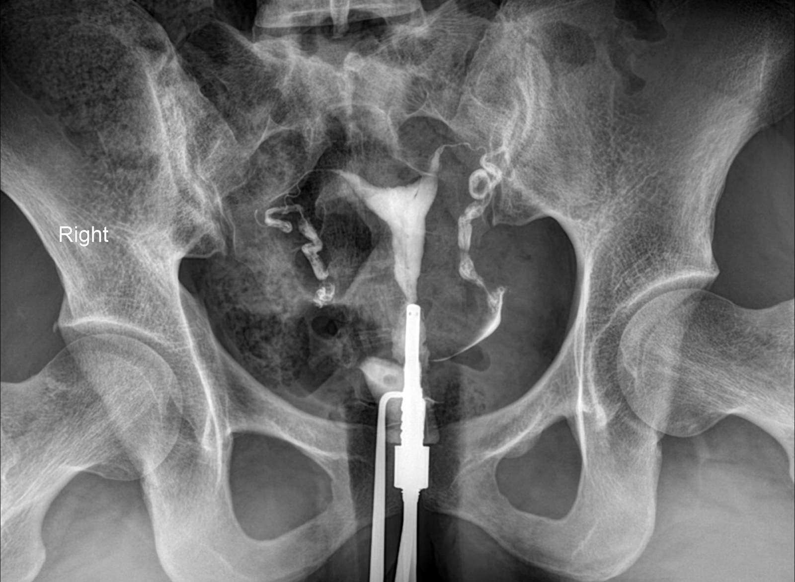
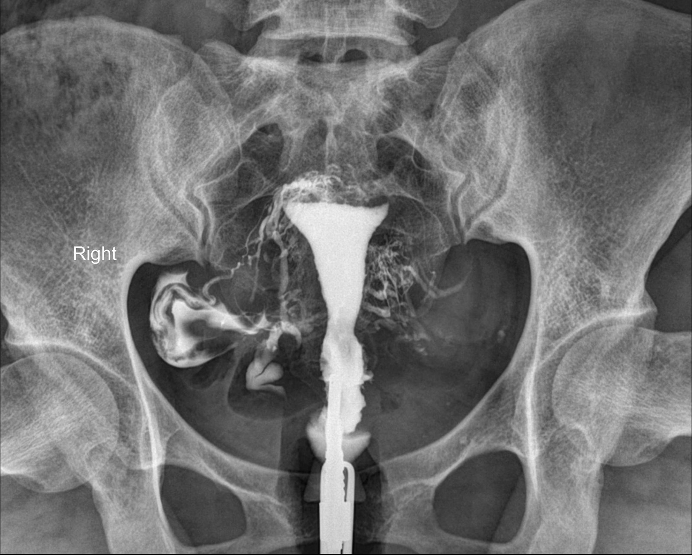

تصوير الرحم والأنابيب بالصبغةHSG (hysterosalpingography)
تصوير تجويف الرحم وقناتي فالوب بحقن صبغة يودية عبر عنق الرحم تحت التنظير الشعاعي، لمعرفة شكل الرحم وهل الأنبوبان سالكان.
لا يوجد ذكر لهذا الفحص في محاضراتنا الحالية؛ المحتوى من Radiopaedia ومراجع منشورة، والرقم بين [ ] يشير إلى المصدر في أسفل الصفحة. للتعلّم فقط، وليس للتشخيص.
دخول الصبغة إلى الأوردة (venous intravasation): شبكة دقيقة حول الرحم؛ قليلة الأهمية مع الصبغة الذائبة بالماء، وخطر الانصمام يخص الصبغة الزيتية [2][17].
Normal hysterosalpingogramتصوير رحم وأنابيب طبيعي🟢 Normal
ما تُظهره الصورة: تجويف رحم مثلثي أملس الحواف وامتلاء الأنبوبين — فحص طبيعي حسب المصدر.

Cerevisae · CC BY-SA 4.0 · Wikimedia Commonsالعلامة المرسومة على الصورة من المصدر.
Bilateral free peritoneal spill (oblique view)انسكاب حرّ للصبغة في البريتون من الجهتين (صورة مائلة)🔵 Example · مثال للفحص
ما تُظهره الصورة: صورة مائلة (RAO مع ميل ذيلي 28 درجة حسب المصدر) تُظهر انسكاب الصبغة الحرّ داخل البريتون من الجهتين — وهذا دليل نفاذية الأنبوبين. الأسماء الإنكليزية المكتوبة على الصورة من المصدر: Free intraperitoneal spillage = انسكاب حرّ داخل البريتون، Bowel gas = غازات الأمعاء، Obturator foramen = الثقبة السدادية، AIIS = الشوك الحرقفي الأمامي السفلي.
🔍 Limits of HSG حدود الفحص: متى نحتاج الرنين أو السونار ثلاثي الأبعاد؟
HSG يُظهر التجويف من الداخل فقط، ولا يُظهر الحافة الخارجية لقاع الرحم؛ لذلك دقّته وحده في التمييز بين الرحم ذي الحاجز وذي القرنين نحو 55% فقط [4][5].
الزاوية بين القرنين: أقل من 75 درجة ترجّح ذا الحاجز، وأكثر من 105 درجة ترجّح ذا القرنين، لكن أغلب الزوايا تقع بينهما والتداخل كبير [4].
للتمييز الأكيد: الرنين المغناطيسي (MRI) أو السونار ثلاثي الأبعاد عبر المهبل (3D TVUS)، لأنهما يُظهران الحافة الخارجية للقاع: شق خارجي أكثر من 1 سم = ذو قرنين [4][5][6].
التمييز مهم للطبيب المعالج، لأن الرحم ذا القرنين لا يسبّب عادةً مشكلة في الإخصاب بخلاف ذي الحاجز [21].
مع أي تشوه خلقي في الرحم قد توجد تشوهات كلوية، وأشيعها غياب الكلية [6].

Case courtesy of Mohammad T. Niknejad, Radiopaedia.org, rID: 156027 · CC BY-NC-SA 3.0
Arcuate uterusالرحم المقوّس🔴 Pathology · مرضي
🩺 الأعراض Symptoms
Usually no symptomsغالباً بلا أعراض
Found by chanceيُكتشف صدفةً بالصورة
🩻 ليش نصوّر؟ يُكتشف غالباً صدفةً أثناء تصوير الرحم والأنابيب لسبب آخر مثل العقم؛ ويُعدّ غالباً تبايناً طبيعياً.
للتعليم فقط — مو للتشخيص.
ما تُظهره الصورة: تقعّر أملس في قاع تجويف الرحم بدل الحافة المستقيمة المعتادة، والأنبوبان سالكان بقطر طبيعي مع انسكاب في البريتون [9].
🟢 تصوير رحم وأنابيب طبيعي Normal hysterosalpingogram
Case courtesy of Bahman Rasuli, Radiopaedia.org, rID: 203220 · CC BY-NC-SA 3.0
Septate uterusالرحم ذو الحاجز🔴 Pathology · مرضي
🩺 الأعراض Symptoms
Repeated miscarriagesإجهاض متكرّر
Difficulty getting pregnantتأخّر الحمل (العقم)
Premature birthولادة مبكّرة
🩻 ليش نصوّر؟ الصبغة تُظهر انقسام التجويف، لكن التمييز عن الرحم ذي القرنين يحتاج رنيناً أو سونار ثلاثي الأبعاد.
للتعليم فقط — مو للتشخيص.
ما تُظهره الصورة: نصفا تجويف الرحم يتباعدان بزاوية حادّة قدرها 69 درجة حسب المصدر، والأنبوبان طبيعيان مع انسكاب طبيعي. الزاوية الأقل من 75 درجة ترجّح الرحم ذا الحاجز، لكنها لا تكفي وحدها [4].
🟢 تصوير رحم وأنابيب طبيعي Normal hysterosalpingogram
Case courtesy of Bahman Rasuli, Radiopaedia.org, rID: 98214 · CC BY-NC-SA 3.0
Bicornuate uterusالرحم ذو القرنين🔴 Pathology · مرضي
🩺 الأعراض Symptoms
Found by chanceيُكتشف صدفةً بالصورة
Repeated miscarriagesإجهاض متكرّر
Premature birthولادة مبكّرة
🩻 ليش نصوّر؟ الصبغة تُظهر قرنين متباعدين، والرنين أو السونار يؤكّد الشق الخارجي العميق في القاع.
للتعليم فقط — مو للتشخيص.
ما تُظهره الصورة: تجويف رحم منقسم إلى قرنين متباعدين مع انسكاب طبيعي من الجهتين. التشخيص تأكّد بالسونار في المصدر، لأن HSG وحده لا يُظهر الحافة الخارجية لقاع الرحم [5][21].
🟢 تصوير رحم وأنابيب طبيعي Normal hysterosalpingogram
ألم حوض شديد أو هبوط ضغط مع حمل في القرن الأثري (خطر تمزّق ونزيف): طارئ.
🩻 ليش نصوّر؟ الصبغة تُظهر تجويفاً واحداً موزي الشكل بأنبوب واحد؛ والرنين يبحث عن قرن أثري وعن الكليتين.
للتعليم فقط — مو للتشخيص.
ما تُظهره الصورة: يمتلئ النصف الأيمن فقط من الرحم مع انسكاب جيد من الجهة اليمنى (حسب المصدر)؛ والتجويف المغزلي (الموزي) بأنبوب واحد هو الشكل المعتاد للرحم وحيد القرن [7].
🟢 تصوير رحم وأنابيب طبيعي Normal hysterosalpingogram
Case courtesy of Sidra Akhtar, Radiopaedia.org, rID: 240788 · CC BY-NC-SA 3.0
T-shaped uterusالرحم على شكل حرف T🔴 Pathology · مرضي
🩺 الأعراض Symptoms
Difficulty getting pregnantتأخّر الحمل (العقم)
Repeated miscarriagesإجهاض متكرّر
Premature birthولادة مبكّرة
🩻 ليش نصوّر؟ الصبغة تُظهر تجويفاً صغيراً على شكل حرف T أثناء تقييم العقم.
للتعليم فقط — مو للتشخيص.
ما تُظهره الصورة: تجويف رحم صغير بجزء علوي قصير يعطي شكل حرف T، والأنبوبان طبيعيان وسالكان مع انسكاب حرّ [10]. الكتابة على الصورة من المصدر (R = الجهة اليمنى، AP 2ND FILM = الصورة الأمامية الخلفية الثانية).
🟢 تصوير رحم وأنابيب طبيعي Normal hysterosalpingogram
ما تُظهره الصورة: تجويف الرحم مشوّه الشكل وجزؤه السفلي متطاول، مع عيب امتلاء (filling defect) دائري في أعلى التجويف يرجّح المصدر أنه من كتلة تحت المخاطية؛ والرنين في الحالة نفسها أظهر ورماً ليفياً كبيراً داخل جدار الرحم في القاع (حسب المصدر).
🟢 تصوير رحم وأنابيب طبيعي Normal hysterosalpingogram
Light or absent periodsقلّة الدورة الشهرية أو انقطاعها
Difficulty getting pregnantتأخّر الحمل (العقم)
Repeated miscarriagesإجهاض متكرّر
Painful periodsألم الدورة الشهرية
🩻 ليش نصوّر؟ الصبغة تُظهر عيوب امتلاء خطية غير منتظمة وتجويفاً لا يتمدّد جيداً بسبب الالتصاقات.
للتعليم فقط — مو للتشخيص.
ما تُظهره الصورة: عيوب امتلاء متعددة غير منتظمة تعطي نمطاً «جيبياً» (lacunar pattern) وتجويفاً مشوّهاً بشدة، مع انسكاب حرّ سريع من الجهتين. المصدر يرجّح أن السبب هنا التهاب بطانة سلّي (tuberculous endometritis) [11].
🟢 تصوير رحم وأنابيب طبيعي Normal hysterosalpingogram
🩻 ليش نصوّر؟ قد تُظهر الصبغة نتوءات صغيرة داخل عضلة الرحم؛ والرنين هو الفحص الأفضل للتأكيد.
للتعليم فقط — مو للتشخيص.
ما تُظهره الصورة: حافة تجويف الرحم غير منتظمة مع نتوءات صغيرة متعددة للصبغة من البطانة إلى داخل عضلة الرحم، توحي بعضال غدي منتشر؛ والأنبوبان يمتلئان وينسكبان طبيعياً. الرنين هو الفحص الأفضل لتأكيده [14].
🟢 تصوير رحم وأنابيب طبيعي Normal hysterosalpingogram
🩻 ليش نصوّر؟ الصبغة تتوقف قرب الرحم ولا تصل للبريتون؛ وقد يكون السبب تقلّصاً، فيُفسَّر بحذر.
للتعليم فقط — مو للتشخيص.
ما تُظهره الصورة: تتوقف الصبغة في الجزء البرزخي (isthmic) من الأنبوبين مع انتفاخ بصلي في نهاية الجزء المملوء، ولا يوجد انسكاب. تظهر أيضاً صبغة داخل جدار الرحم وأوردة الحوض (intravasation)، والتجويف طبيعي مع تقعّر أملس في القاع. المريضة لديها نوبات سابقة من التهاب الحوض (حسب المصدر).
🟢 تصوير رحم وأنابيب طبيعي Normal hysterosalpingogram
ألم حوضي شديد مع حمّى: احتمال التهاب أو تقيّح البوق (طارئ).
تأخّر الدورة مع ألم ونزف: يُستبعد حمل خارج الرحم (طارئ).
🩻 ليش نصوّر؟ تصوير الرحم والأنابيب يُظهر أنابيب متوسّعة لا تمرّر الصبغة.
للتعليم فقط — مو للتشخيص.
ما تُظهره الصورة: الأنبوب الأيمن متوسّع بسائل بلا انسكاب في البريتون، والأيسر متوسّع مع احتباس الصبغة وانسكاب ضعيف، مع تجمّع صبغة محصور في يسار الحوض من التصاقات حول الأنبوب — توسّع وانسداد في الأنبوبين حسب المصدر [15].
🟢 تصوير رحم وأنابيب طبيعي Normal hysterosalpingogram
تأخّر الدورة مع ألم ونزف: يُستبعد حمل خارج الرحم (طارئ).
🩻 ليش نصوّر؟ الصبغة تملأ جيوباً صغيرة في برزخ الأنبوب لا تظهر بالأشعة العادية.
للتعليم فقط — مو للتشخيص.
ما تُظهره الصورة: جيوب صغيرة متعددة (رتوج) تخرج من الجزء البرزخي للأنبوبين — التهاب البرزخ العُقدي في الجهتين. يكون في الجهتين في نحو 85% من المريضات، ويرتبط بالعقم والحمل خارج الرحم [16]. حرف D على الصورة يعني «اليمين» بالبرتغالية (لغة المصدر).
🟢 تصوير رحم وأنابيب طبيعي Normal hysterosalpingogram
⚠️ A complication seen on the images مضاعفة تظهر على الصور

Case courtesy of Mohammad T. Niknejad, Radiopaedia.org, rID: 93702 · CC BY-NC-SA 3.0
Venous intravasationدخول الصبغة إلى الأوردة🟠 Complication · مضاعفة
ما تُظهره الصورة: صبغة بشكل شبكي دقيق في جدار الرحم وأوردة الحوض (دخول الصبغة إلى الأوردة)، مع انسداد جزئي في الأنبوب الأيسر؛ والأنبوب الأيمن طبيعي حسب المصدر. مع الصبغة الذائبة بالماء قليل الخطورة، أما مع الصبغة الزيتية فقد يسبّب انصماماً [2][17].